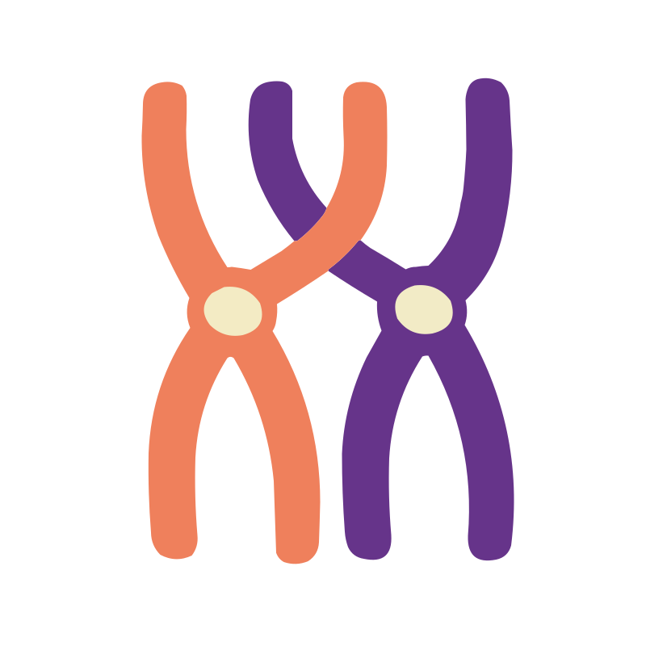

INFORMATION ABOUT SPINDLE APPARATUS!!!

INFORMATION ABOUT KROMOZOM!!!
INFORMATION ABOUT KROMOZOM!!!
INFORMATION ABOUT SPINDLE APPARATUS!!!
InterfazMayoz bölünme de mitoz bölünmedeki gibi interfaz olarak adlandırılan evreden sonra başlar. İnterfaz evresinde, hücre bölünmeye hazırlanır. Bu evrede hücrenin hacmi büyür; organeller, DNA ve sentrozom kopyalanır.
Profaz-1 evresinde, aynı mitoz bölünmenin profaz evresindeki gibi, DNA’nın proteinlerle oluşturduğu yapı olarak adlandırılan kromatin yoğunlaşarak kıvrılır ve giderek daha sıkı hâle gelir. Sıkılaştıkça kısalan ve kalınlaşan kromatinler mikroskop aracılığıyla görülebilen X şeklindeki kromozomları oluşturur. Kopyalanan kromozomlar kardeş kromatit olarak adlandırılır. Kardeş kromatitler, özdeş DNA çiftleridir ve sentromer adı verilen bir noktada birleşir. Profaz-1 evresinde, mitoz bölünmedeki profaz evresinden farklı olarak, kromozomlar ikili çiftler hâlinde eşleşir. Bu çiftlere homolog kromozomlar denir.
Metafaz Metafaz-1 evresinde, mikrotübüllerin oluşturduğu iğ ipliklerine bağlı homolog kromozomlar hücrenin ortasına dizilir. Bu dizilim rastgele olur. Örneğin büyük mor kromozom ve küçük turuncu kromozom aynı kutba doğru dizilebilir ya da hem büyük hem de küçük mor kromozom aynı kutba doğru dizilebilir. Bu durum farklı eşey hücrelerinin farklı kromozom kombinasyonlarına sahip olmasını sağlar. Böylece mayoz bölünmenin ikinci genetik çeşitliliği bu evrede gerçekleşir.
Anafaz Anafaz-1 evresinde, hücrenin ortasına dizilen homolog kromozomlar iğ iplikleri tarafından zıt kutuplara çekilir. Bu sırada kardeş kromatitler birbirinden ayrılmaz.
TelofazTelofaz-1 evresi, homolog kromozomların kutuplara doğru çekilmesinin tamamlanması ile başlar. Bazı canlılarda çekirdek zarı bu evrede yeniden oluşur. Kromozomlar da yeniden çözülür. Bu evrede çekirdek zarı oluştuktan sonra hücre sitoplazmasının bölündüğü aşama olarak bilinen sitokinez başlar. Diğer canlılarda ise bu aşamalar atlanarak doğrudan mayoz-2 bölünmesine geçilir.